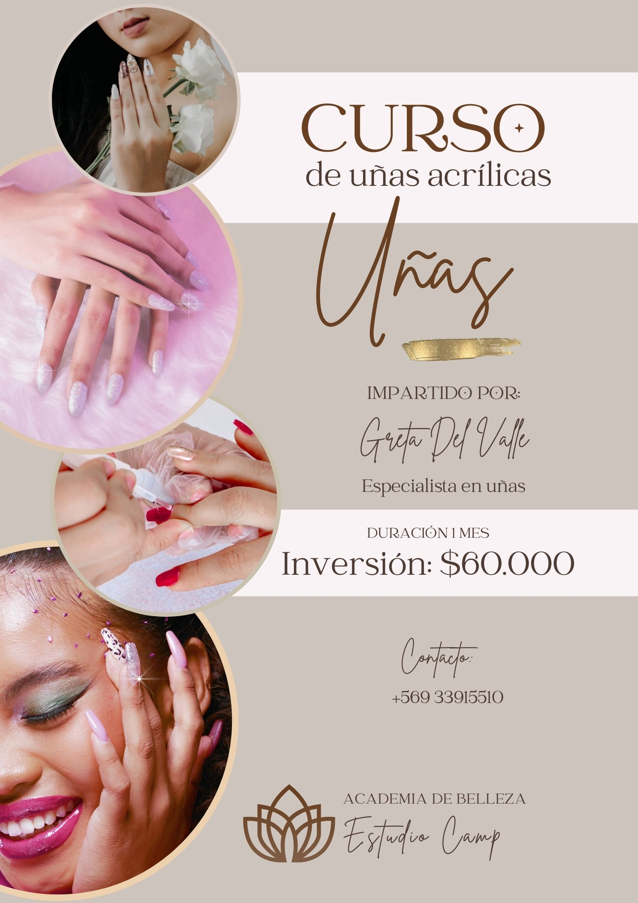
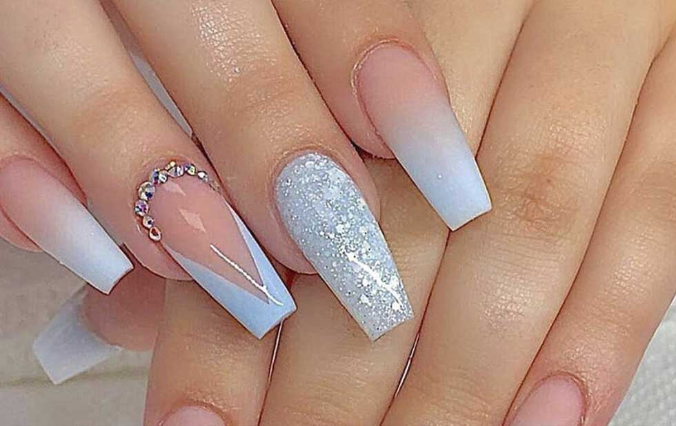
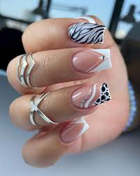
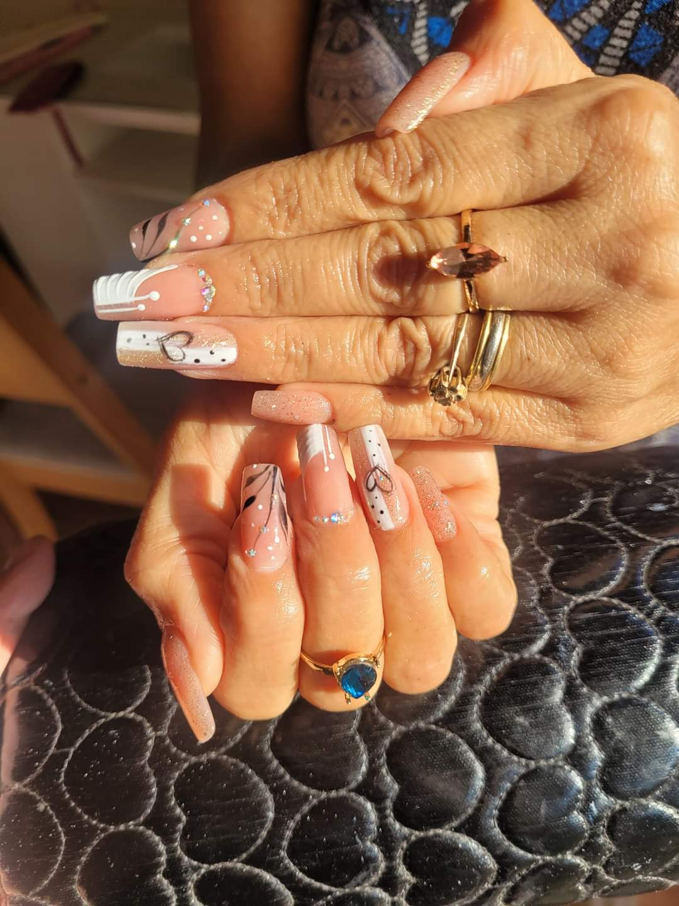
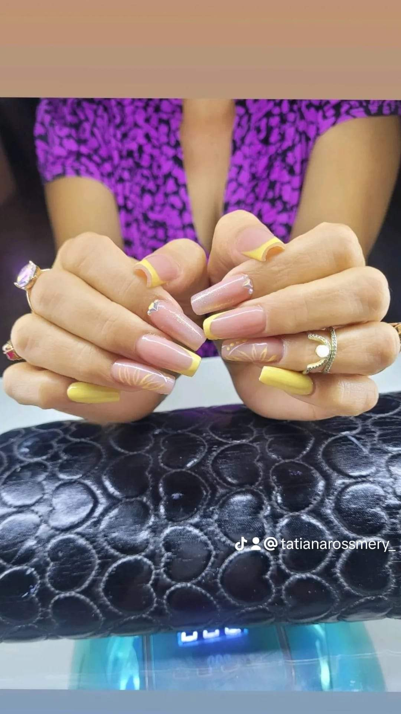
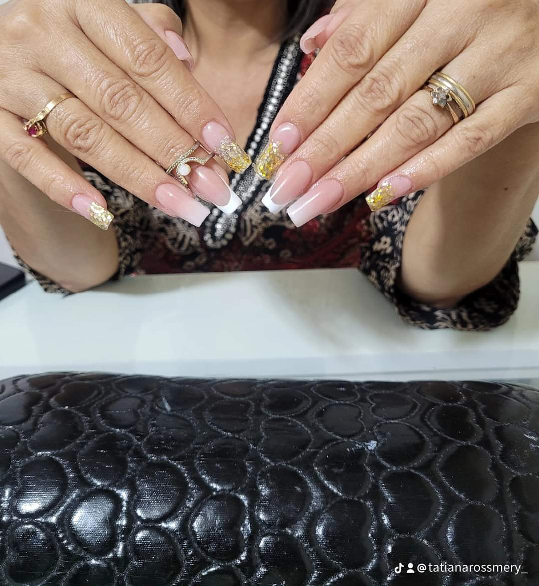

"Explora tu creatividad con nuestros cursos de uñas acrílicas: Aprende, práctica, domina."
Nuestros cursos de uñas acrílicas ofrecen enseñanza de técnicas avanzadas y tendencias actuales. Adaptados a todos los niveles, satisfacen las necesidades de principiantes y profesionales.







Nuestros cursos cubren desde los conceptos básicos hasta las técnicas más avanzadas en la aplicación de uñas acrílicas, incluyendo el modelado, la esculpida, el diseño y la decoración.
Ofrecemos cursos intensivos de corta duración para aquellos que deseen aprender rápidamente, así como cursos más extensos que permiten una práctica más profunda y completa.
Temas que se Cubrirán en los Cursos:
- Introducción a las uñas acrílicas y su historia.
- Preparación de las uñas naturales.
- Técnicas de esculpido y modelado.
- Aplicación de diferentes tipos de acrílico.
- Diseño y decoración de uñas.
- Mantenimiento y cuidado de las uñas acrílicas.